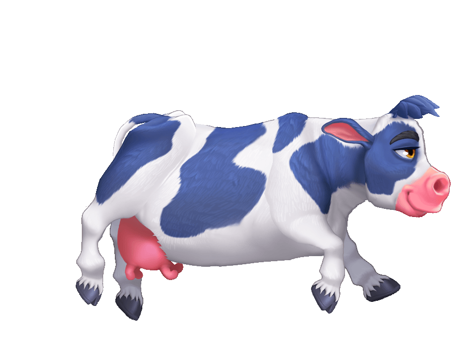

নীলা জানে? মাঝে মাঝে আমি অত্যন্ত ক্রিয়েটিভ হয়ে উঠি, মনে হয় এসব চিন্তা আমার না, কেউ এসে আমাকে দিয়ে যায়। এখন রাত ৩টা বাজে, ঘুম ভাঙলো স্বপ্ন দেখে। স্বপ্নে দেখলাম আমার সুন্দরী বড় দুধওয়ালী টিচার আমাকে জিজ্ঞেস করছে, 'হেই, বলো তোমার জীবনের উদ্দেশ্য কী?'
আমি বললাম, 'আমি একটি চড়ুই পাখির জীবনী লিখব। আমার বড় একটা শিপ থাকবে, সেই শিপে আমি একা, কোনো ডিজিটাল ডিভাইস থাকবে না; থাকবে সাদা কাগজ আর কলম। আমি লিখব, কাগজ ভরে উঠবে একটি চড়ুই পাখির বায়োগ্রাফিতে। তার সুখ, দুঃখ, একাকীত্ব, আনন্দ মুহূর্ত আর তার স্বপ্নগুলো থাকবে তাতে।'
আমার শিপে পর্যাপ্ত মজুদ থাকা অবস্থায় আমার স্বাভাবিক মৃত্যু হবে,কিন্তু আমার শিপ বয়ে যাবে অনন্তের দিকে— যতদিন এই পৃথিবীতে দিন আর রাত হবে। মৃত্যুর সাথে সাথে শুরু হবে প্রচণ্ড বৃষ্টি। তোমাদের দেশের মতো গ্যাস্ট্রিকে আক্রান্ত রোগা বৃষ্টি না, ঝুম বাংলা বৃষ্টি। আমার শরীর ভিজিয়ে দিবে, আমি মারা গেছি ঠিকই কিন্তু এই বৃষ্টিতে আমি আনন্দিত হবো। আমার সুখ অনুভব হবে, কারণ বেঁচে থাকতে আমি বৃষ্টিতে ভিজতে পারতাম না, আমার জ্বর আসতো।
আমার সবচেয়ে সুখময় স্মৃতি হচ্ছে আমি আর আম্মু ঝুম বৃষ্টিতে ভিজছি, দুজন হাসছি; কিন্তু কেন হাসছি আমরা জানি না। সেদিন ঐ শিপে বৃষ্টিতে আমি ভিজব, মৃত মানুষ হাসতে পারলে হয়তো হাসব। আমার নাপাক শরীর ধুয়ে দিয়ে যাবে। সাদা কাগজে লেখা চড়ুই পাখির বায়োগ্রাফিটাও ধুয়ে নিয়ে যাক, চিন্তাগুলো না ধুলেই হলো।
আমার ভাবতে ভালো লাগে বড় দুধওয়ালী টিচার পুরো শরীর দুলিয়ে খিলখিল করে হাসছে, আমার দৃষ্টি তার বুকের দিকে। থাকুক কিছু চিন্তা। পৃথিবীতে সবার শুদ্ধ মানুষ হওয়ার দরকার নেই।